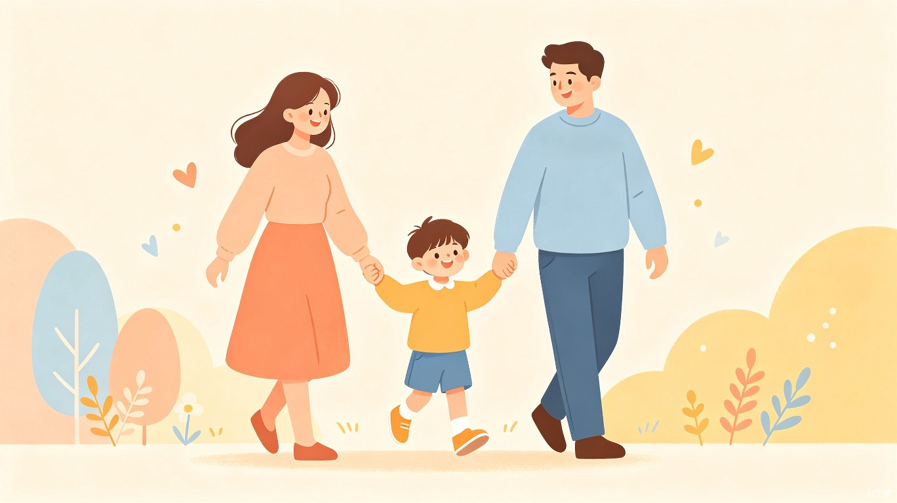
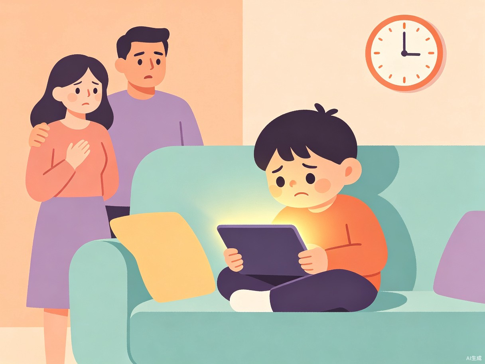
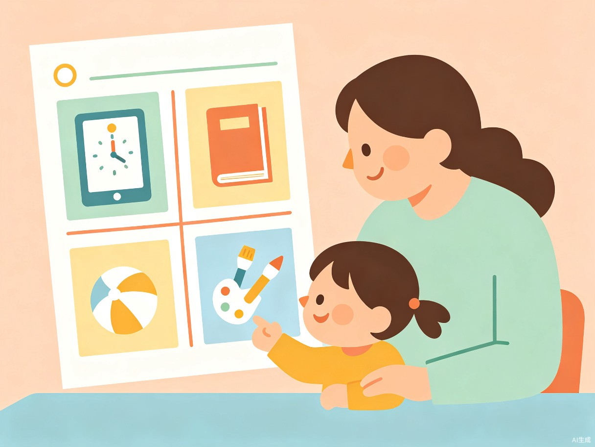
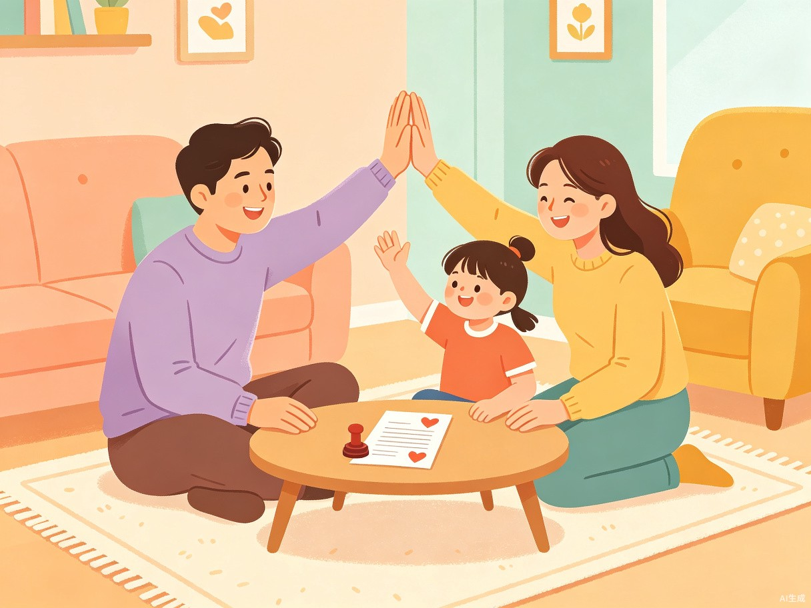
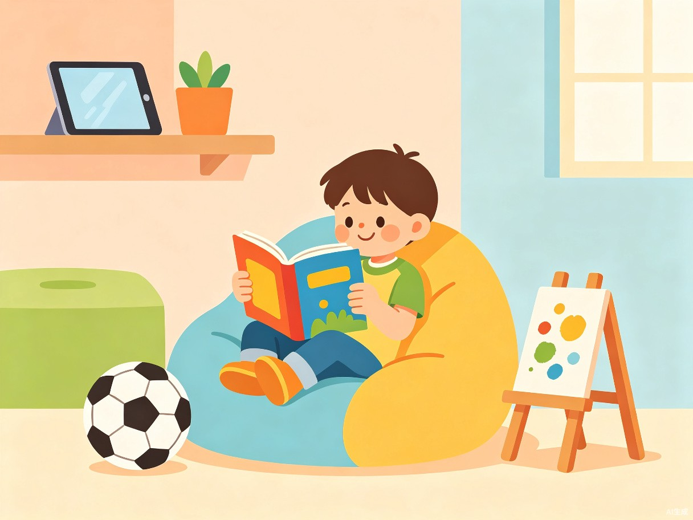

我的屏幕安全小方案 —— 让电子产品成为好朋友
目录 · 今天讲什么
为什么屏幕让我和爸爸妈妈不开心
给屏幕时间画一个"安全圈"
全家人一起遵守的屏幕规则
不看屏幕的时候，我做什么更好玩
Part · 01
屏幕很好玩，但有时候会让我和爸爸妈妈不开心……
Part 01 · 我的烦恼

看平板的时候总觉得时间过得特别快，一看就是好久，作业和玩耍的时间都变少了。
妈妈让我关掉平板的时候，我总想再玩一会儿，然后就吵架了，大家都不开心。
看太多屏幕以后，眼睛酸酸的，有时候还会揉眼睛。
Part · 02
烦恼不害怕，我有好办法！
Part 02 · 时间管理

我给自己画了一个每天的时间表，把屏幕时间圈在一个安全的范围里：
用闹钟提醒自己，闹钟响了就放下
先做正事，再享受屏幕时间
保护眼睛，也让自己好好睡觉
Part 02 · 亲子约定

我和爸爸妈妈一起开会，定了一个约定——不光是我，爸爸妈妈也要遵守！
规则不是妈妈一个人说了算，是我们全家一起商量出来的
吃饭的时候爸爸妈妈也不看手机，这样很公平
时间到了以后，用温柔的方式提醒，不再大吵大闹
Part 02 · 好习惯

放下平板以后，我发现有很多比屏幕更好玩的事：
总结 · 我的屏安方案
改变 · 之前 vs 现在
屏幕是工具，不是主人。用好它，它就是我们的好朋友！
童趣屏安 · 让每个家庭都开开心心